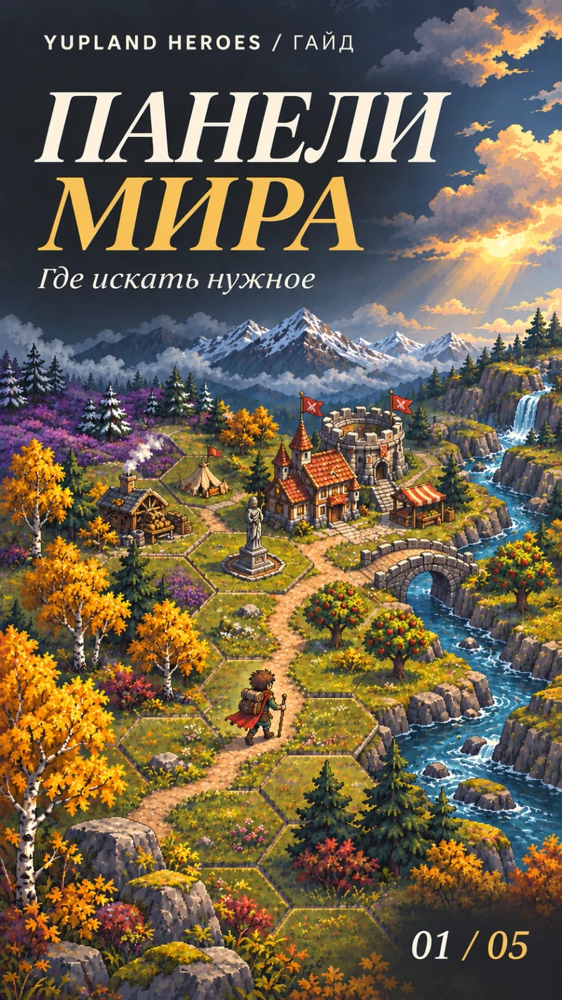
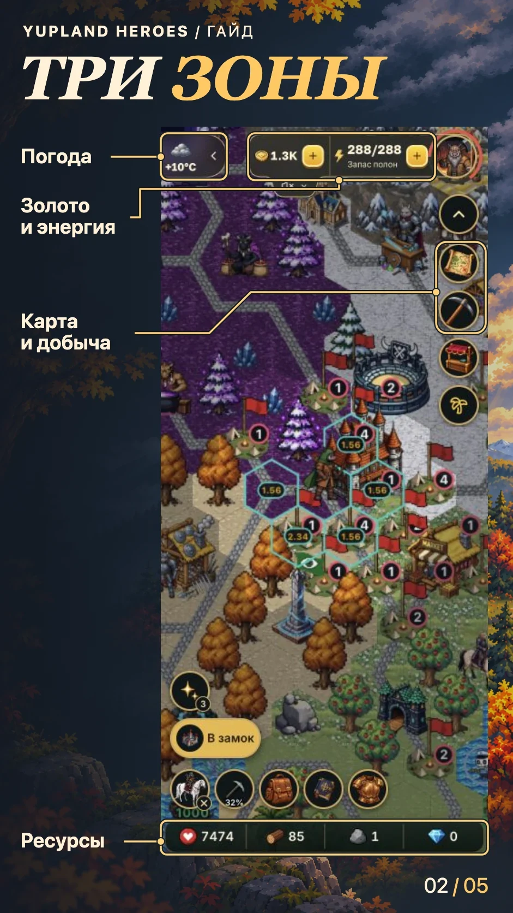
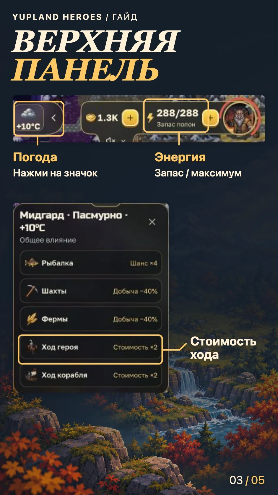
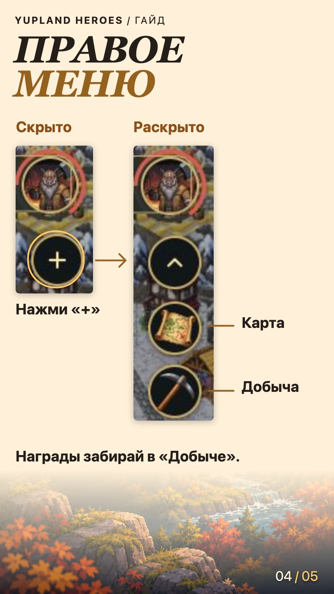
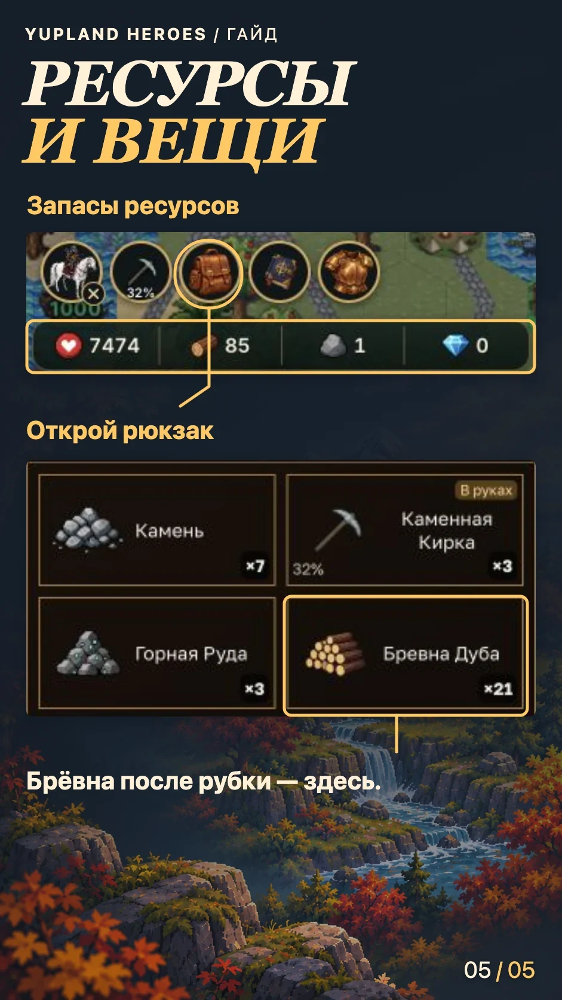

Панели мира: показатели, действия и ресурсы
-
Обложка 
-
Обзор интерфейса 
-
Шаг 01 
-
Шаг 02 
-
Шаг 03 
На схеме видно, где искать нужное. На игровых снимках показано состояние аккаунта на 1 ноября 2026 года. Открыть исходный мобильный снимок.

Перед выходом
Рядом с портретом видны золото и энергия. У энергии первое число показывает текущий запас, второе — максимум. Сравни запас с расходом у выбранной цели.
Если на карте есть значок погоды, нажми его. В карточке видны условия мира и их влияние на действия. В строке «Ход героя» можно проверить, меняется ли стоимость шага.
Карта и награды
Нажми круглый «+» под портретом. В раскрытом ряду свиток открывает обзорную карту, а кирка — «Добычу». Просмотр карты оставляет героя на его клетке. Если в «Добыче» ждут награды, нажми «Забрать награды».
Где искать брёвна
Внизу экрана видны запасы ресурсов, например дерева и камня. Брёвна после рубки ищи в рюкзаке. Если его кнопка скрыта, нажми фигурку стоящего героя внизу слева, затем значок рюкзака.
Дальше — как двигать и приближать карту.